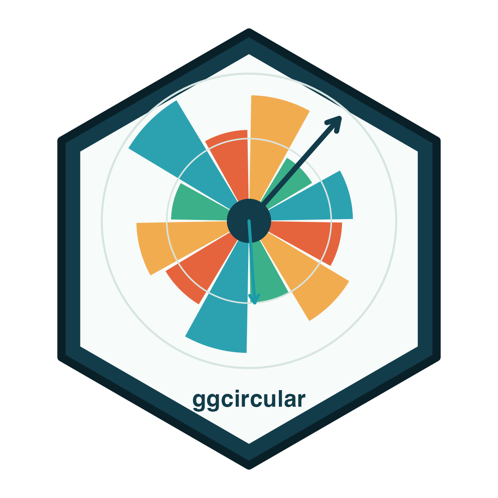
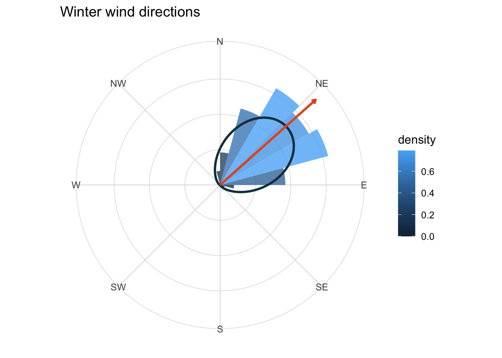
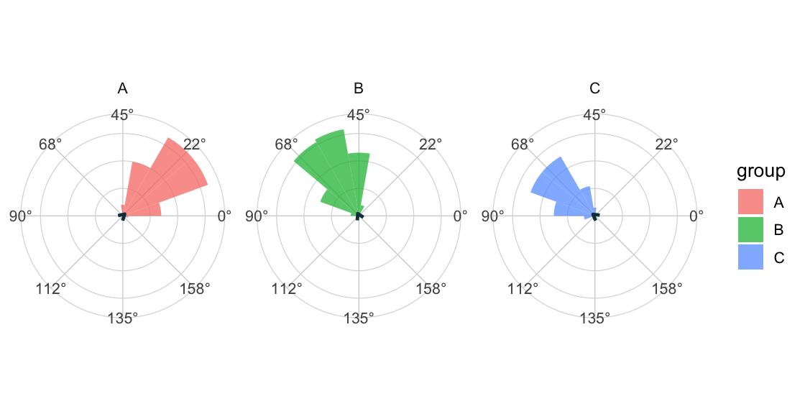
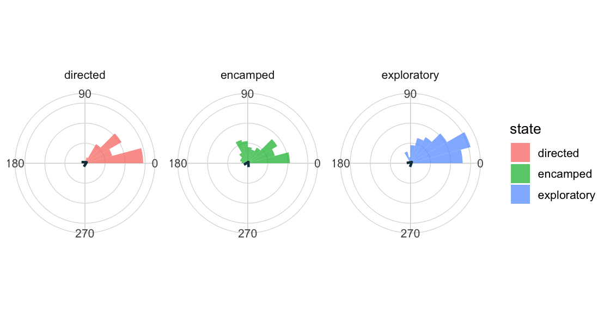
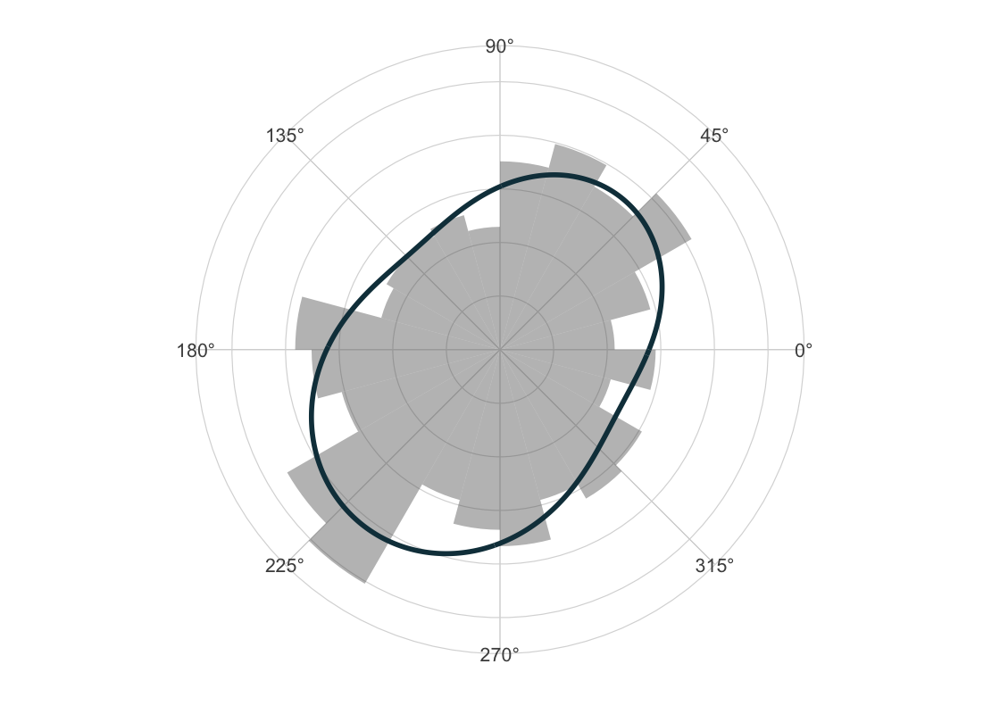

ggcircular is a ggplot2 extension for circular, axial and directional data. It provides layers, scales, coordinate helpers, summaries and diagnostics for angles measured on a periodic scale.
The package is designed for exploratory graphics, teaching examples and reproducible statistical workflows involving directions, bearings, orientations, times of day, turn angles and other circular measurements.
Installation
Install the development release from GitHub:
install.packages("remotes")
remotes::install_github("AurelienNicosiaULaval/ggcircular")Or clone with SSH and install locally:
Quick Start
wind_directions |>
filter(season == "winter") |>
ggplot(aes(x = direction)) +
geom_rose(aes(y = after_stat(density), fill = after_stat(density)), bins = 24, alpha = 0.78) +
geom_circular_density(linewidth = 1.1, colour = "#123C4A") +
geom_mean_direction(length = "resultant", colour = "#E4572E", linewidth = 1.1) +
scale_x_circular_compass() +
coord_circular(zero = "north", direction = "clockwise") +
labs(fill = "density", title = "Winter wind directions") +
theme_circular()
What It Does
| Workflow | Main helpers |
|---|---|
| Rose diagrams and circular histograms |
geom_rose(), stat_rose()
|
| Circular density estimation |
geom_circular_density(), stat_circular_density()
|
| Mean direction and concentration |
geom_mean_direction(), circular_summary(), estimate_kappa()
|
| Circular confidence intervals and tests |
circular_mean_ci(), rayleigh_test(), watson_williams_test(), stat_circular_test()
|
| Axial orientations modulo pi |
axial = TRUE in summaries and layers |
| Theoretical circular distributions |
stat_vonmises(), stat_wrapped_normal(), stat_uniform_circular()
|
| Mixtures of von Mises components |
fit_vonmises_mixture(), stat_vonmises_mixture()
|
| Movement and state-angle graphics |
mutate_directional_features(), geom_direction_arrow(), plot_state_angles()
|
| Angular model diagnostics |
circular_residuals(), circular_model_diagnostics(), autoplot() methods |
| Spherical and posterior helpers |
spherical_summary(), as_circular_draws(), summarise_circular_draws()
|
Design Principles
- Angles are stored and computed in radians.
- Scales handle display labels in radians, degrees, hours or compass labels.
- Directional data use period
2 * pi. - Axial data use period
pithroughaxial = TRUE. - Heavy packages remain optional and are accessed with explicit availability checks.
- Outputs are standard
ggplotobjects, tibbles or familiar test objects.
Summaries
circular_summary() respects existing dplyr groups and returns mean direction, resultant length, circular variance, circular standard deviation and an estimated von Mises concentration parameter.
wind_directions |>
circular_summary(direction, season) |>
mutate(
mean_degrees = round(rad_to_deg(mean), 1),
Rbar = round(Rbar, 3),
kappa = round(kappa, 2)
) |>
select(season, n, mean_degrees, Rbar, kappa)
#> # A tibble: 4 × 5
#> season n mean_degrees Rbar kappa
#> <chr> <int> <dbl> <dbl> <dbl>
#> 1 fall 131 310. 0.811 3
#> 2 spring 115 135. 0.802 2.89
#> 3 summer 138 223. 0.87 4.15
#> 4 winter 116 48.2 0.904 5.52Axial Data
Axial observations identify opposite directions. For example, an orientation of 0 radians is equivalent to an orientation of pi radians. Use axial = TRUE to compute and display these data modulo pi.
ggplot(axial_orientations, aes(x = orientation, fill = group)) +
geom_rose(bins = 18, axial = TRUE, alpha = 0.72) +
geom_mean_direction(axial = TRUE, colour = "#123C4A", linewidth = 1) +
scale_x_circular_degrees(limits = c(0, pi)) +
coord_circular() +
facet_wrap(~ group) +
theme_circular()
Directional Movement
ggcircular includes helpers for bearings, turn angles and state-specific angular distributions.
animal_steps |>
filter(!is.na(turn_angle)) |>
ggplot(aes(x = turn_angle, fill = state)) +
geom_rose(bins = 24, alpha = 0.72) +
geom_mean_direction(colour = "#123C4A", linewidth = 1) +
scale_x_circular_degrees(
breaks = deg_to_rad(c(0, 90, 180, 270)),
labels = c("0", "90", "180", "270")
) +
coord_circular() +
facet_wrap(~ state) +
theme_circular()
Mixtures of von Mises Distributions
Finite mixtures are fitted with an expectation-maximization routine and can be drawn directly on top of empirical rose diagrams.
set.seed(2026)
fit_mix <- fit_vonmises_mixture(wind_directions$direction, k = 2, init = "spaced")
ggplot(wind_directions, aes(x = direction)) +
geom_rose(aes(y = after_stat(density)), bins = 24, alpha = 0.42) +
stat_vonmises_mixture(fit = fit_mix, linewidth = 1.2, colour = "#123C4A") +
scale_x_circular_degrees() +
coord_circular() +
theme_circular()
tidy_circular(fit_mix) |>
mutate(
mu_degrees = round(rad_to_deg(mu), 1),
kappa = round(kappa, 2),
proportion = round(proportion, 3)
) |>
select(component, proportion, mu_degrees, kappa)
#> # A tibble: 2 × 4
#> component proportion mu_degrees kappa
#> <int> <dbl> <dbl> <dbl>
#> 1 1 0.337 51.4 1.4
#> 2 2 0.663 232. 0.78Tests and Intervals
circular_mean_ci(
wind_directions$direction,
method = "bootstrap",
R = 399,
seed = 2026
) |>
mutate(across(c(mean, lower, upper), rad_to_deg))
#> # A tibble: 1 × 7
#> mean lower upper level method n Rbar
#> <dbl> <dbl> <dbl> <dbl> <chr> <int> <dbl>
#> 1 235. 139. 354. 0.95 bootstrap 500 0.0494
rayleigh <- rayleigh_test(wind_directions$direction)
tibble::tibble(
statistic = unname(rayleigh$statistic),
n = unname(rayleigh$parameter),
p_value = rayleigh$p.value,
method = rayleigh$method
)
#> # A tibble: 1 × 4
#> statistic n p_value method
#> <dbl> <int> <dbl> <chr>
#> 1 1.22 500 0.295 Rayleigh test of circular uniformityOptional Model Integrations
The package keeps heavier modeling ecosystems in Suggests. When available, these integrations add diagnostics without making them hard dependencies.
fit <- CircularRegression::consensus(direction ~ speed, data = wind_directions)
circular_model_diagnostics(fit)
autoplot(fit, type = "residuals_density")
autoplot(fit, type = "fitted_observed")Optional helpers currently target:
-
CircularRegressionangular, consensus and two-step objects. -
momentuHMMstate probabilities and Viterbi states. -
posteriordraw objects throughposterior::as_draws_df(). -
circulartests when classical circular test implementations are available.
Development Status
ggcircular is currently experimental. The public API is usable, tested and documented, but may still evolve as more angular model classes and validation cases are added.
Current checks:
- Local
devtools::test()passes with 111 tests. - Local
devtools::check(document = FALSE, build_args = "--no-manual")passes with 0 errors, 0 warnings and 0 notes. - GitHub Actions runs
R CMD checkon Linux, macOS and Windows. -
pkgdownbuilds and publishes the website frommain.
References
- Fisher, N. I. (1993). Statistical Analysis of Circular Data. Cambridge University Press.
- Jammalamadaka, S. R., and Sengupta, A. (2001). Topics in Circular Statistics. World Scientific.
- Pewsey, A., Neuhäuser, M., and Ruxton, G. D. (2013). Circular Statistics in R. Oxford University Press.
- Wickham, H. (2016). ggplot2: Elegant Graphics for Data Analysis. Springer.